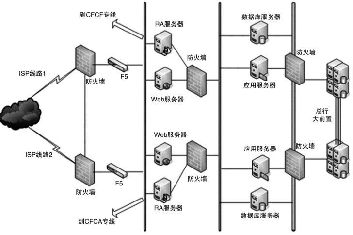

复杂度来源-安全¶
Important
安全本身是一个庞大而又复杂的技术领域，并且一旦出问题，对业务和企业形象影响非常大。
Note
从技术的角度来讲，安全可以分为两类：一类是功能上的安全，一类是架构上的安全。
功能安全¶
Note
本质上是因为系统实现有漏洞，黑客有了可乘之机。从实现的角度来看，功能安全更多地是和具体的编码相关，与架构关系不大。功能安全其实也是一个 “攻” 与 “防” 的矛盾，只能在这种攻防大战中逐步完善，不可能在系统架构设计的时候一劳永逸地解决。
黑客会利用各种漏洞潜入系统，利用系统或家中不完善的地方潜入，并进行破坏或者盗取。因此形象地说，功能安全其实就是 “防小偷”。常见的 XSS 攻击、CSRF 攻击、SQL 注入、Windows 漏洞、密码破解等。
现在很多开发框架都内嵌了常见的安全功能，能够大大减少安全相关功能的重复开发，但框架只能预防常见的安全漏洞和风险，无法预知新的安全问题，而且框架本身很多时候也存在漏洞（例如，流行的 Apache Struts2 就多次爆出了调用远程代码执行的高危漏洞，给整个互联网都造成了一定的恐慌）。所以功能安全是一个逐步完善的过程，而且往往都是在问题出现后才能有针对性的提出解决方案，我们永远无法预测系统下一个漏洞在哪里，也不敢说自己的系统肯定没有任何问题。
架构安全¶
传统的架构安全主要依靠防火墙，防火墙最基本的功能就是隔离网络，通过将网络划分成不同的区域，制定出不同区域之间的访问控制策略来控制不同信任程度区域间传送的数据流。例如，下图是一个典型的银行系统的安全架构。

Note
防火墙的功能虽然强大，但性能一般，所以在传统的银行和企业应用领域应用较多。但在互联网领域，防火墙的应用场景并不多。
性能:
因为互联网的业务具有海量用户访问和高并发的特点，防火墙的性能不足以支撑；
尤其是互联网领域的 DDoS 攻击，轻则几 GB，重则几十 GB。
成本:
这种规模的攻击，如果用防火墙来防，则需要部署大量的防火墙，成本会很高。
例如，中高端一些的防火墙价格 10 万元，每秒能抗住大约 25GB 流量，
那么应对这种攻击就需要将近 30 台防火墙，成本将近 300 万元，这还不包括维护成本，
而这些防火墙设备在没有发生攻击的时候又没有什么作用。
其他影响:
即使不考虑成本，DDoS 攻击最大的影响是大量消耗机房的出口总带宽。
不管防火墙处理能力有多强，当出口带宽被耗尽时，整个业务在用户看来就是不可用的，
因为用户的正常请求已经无法到达系统了。
防火墙能够保证内部系统不受冲击，但带宽占满用户也是进不来的。
Note
基于上述原因，互联网系统的架构安全目前并没有太好的设计手段来实现，更多地是依靠运营商或者云服务商强大的带宽和流量清洗的能力，较少自己来设计和实现。